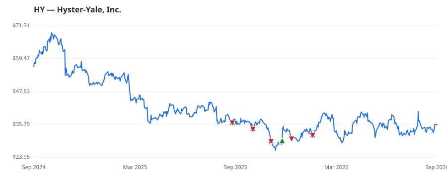

bullish · bearish · n/a — dots: price>SMA10 · SMA10>SMA50 · SMA50>SMA200 · up>down volume (20d)
Capital Goods · small cap
Members who bought HY earned a dollar-weighted +1.7% from their disclosure dates, versus -0.1% for the S&P 500 over the same holding windows (+1.8% alpha).

▲ green = a disclosed purchase · ▼ red = a disclosed sale (plotted on disclosure date)
Hyster Yale Inc designs, engineers, manufactures, sells, and services a comprehensive line of lift trucks, attachments, aftermarket parts, and technology solutions marketed globally under the Hyster and Yale brand names. The company has four segments, which include three in the lift truck business as discussed below, as well as Bolzoni S.p.A. (Bolzoni). The majority of its revenue is generated from Lift Trucks. Geographically, it operates in America, EMEA, and JAPIC regions, of which maximum revenue is generated from its business in America, which includes lift truck operations in the U.S., Ca INDUSTRIAL TRUCKS, TRACTORS, TRAILERS & STACKERS · website
| Revenue | $3.8B | Net income | $-58.0M |
|---|---|---|---|
| Operating income | $-22.1M | Diluted EPS | $-3.40 |
| Assets | $2.0B | Equity | $476.3M |
| Member | Chamber | Out-performer | Disclosed buys $ | Return on buys |
|---|---|---|---|---|
| Tim Moore | house | yes | $528K | +1.6% |
Disclosed $ figures are bracket midpoints — filings report ranges (e.g. $1,001–$15,000), not exact amounts.
| Fund | Fund alpha vs SPY | Position | % of book |
|---|---|---|---|
| Pacific Ridge Capital Partners, LLC | +29% | $1M | 0.2% |
Hedge data: SEC EDGAR 13F · ranked funds beat SPY in >50% of their quarters · fund alpha = mirror-portfolio return minus SPY.